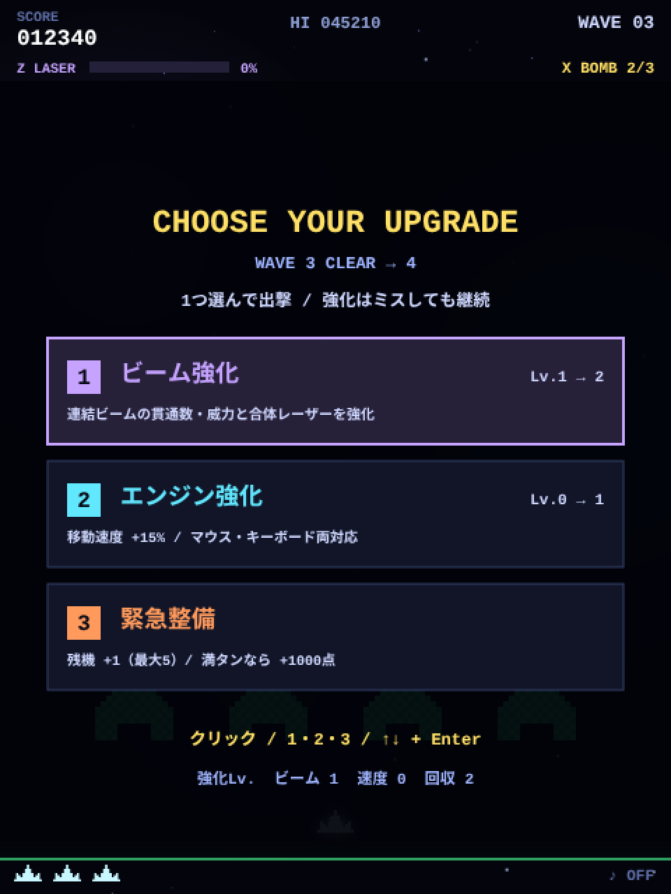

ゲーム画面で見る、3つの見どころ
画像を選ぶと拡大できます
編隊との撃ち合いから、強化の選択、ボスとの攻防まで。ウェーブを進めるほど戦い方が広がります。

連結砲と合体レーザー
連結ビーム砲で火力を増やし、ゲージが満タンになったらレーザーを発射。射線上の敵と敵弾をまとめて消し去ります。

5ウェーブごとの大型戦艦
左右の砲台を壊して中央コアを攻撃。赤く示されたレーザーの予告位置から離れ、反撃の機会を狙います。


毎ウェーブ、強化を1つ選択
ビーム・移動速度・回収範囲を伸ばすか、残機やボムを補給するか。次のウェーブに向けて自機を育てます。
まずは、1ウェーブをクリアしよう
基本は「左右へ動く」「撃つ」「避ける」の3つ。操作に慣れたら、連続撃破やカプセルの回収も狙ってみましょう。
- 01
ゲームを開いてスタート
「ゲームをプレイ」から画面を開き、タイトル画面をクリック。スペースキーまたはEnterキーでも始められます。
- 02
左右に動いて、撃って、避ける
マウスを左右に動かして自機を操作し、クリックを押し続けて射撃。敵弾や突入してくる敵を避けながら、編隊を減らします。
- 03
全滅させたら、次の強化へ
敵をすべて倒すとウェーブクリア。3つの候補から強化を1つ選ぶと、次のウェーブが始まります。
覚えておきたいルール
- 残機は3からスタート。敵弾や突入する敵に当たるとミスになり、残機がなくなるとゲームオーバーです。
- 編隊が地上まで侵入すると、残機があってもゲームオーバーになります。
- 緑のバリアは弾を防ぎますが、自分の弾も通しません。撃たれると崩れ、次のウェーブで復元します。
- 5ウェーブごとに大型戦艦が出現。左右の砲台を破壊してから、中央コアを撃破します。
スコアを伸ばすコツ
- 2.2秒以内に撃破をつなぐとコンボが継続。倍率は最大×8まで上がります。
- ノーダメージでウェーブをクリアすると、パーフェクトボーナスがもらえます。
- 5000点ごとに残機が1つ増えます。残機の上限は5です。
- ときどき画面上部を横切る円盤も得点源。無理に追わず、敵弾の少ないタイミングを狙いましょう。
操作方法
マウス中心でも、キーボード中心でも遊べます。レーザーとボムには、ゲーム画面の下に専用ボタンもあります。
| 操作 | マウス・画面のボタン | キーボード |
|---|---|---|
| スタート・再挑戦 | タイトル・ゲームオーバー画面をクリック | Space / Enter |
| 左右へ移動 | ゲーム画面の上でマウスを左右へ移動 | ← → / A D |
| ショット | 左クリックを長押し | Space / Enter を長押し |
| 合体レーザー | 右クリック / 「合体レーザー」ボタンゲージが満タンのときに使用できます | Z |
| 緊急回避ボム | 「ボム」ボタン残数があるときに使用できます | X |
| 強化を選ぶ | 強化カードをクリック | 1 2 3または ↑ ↓ で選び、Enter で決定 |
| 一時停止・再開 | 一時停止中にゲーム画面をクリックすると再開 | P / Esc |
| サウンド切替 | — | M |
| 表示言語 | ゲーム画面下の「日本語」「ENGLISH」 | — |
レーザーとボムは戦闘中のみ使用できます。ウェーブ開始の表示中、強化選択中、一時停止中には発動しません。
カプセルを拾って、ピンチを切り抜ける
倒した敵が落とすカプセルを拾うと、自機がパワーアップ。4種類の効果は組み合わせて使えます。
W · 3方向ショット
8秒間、正面と左右へ同時に発射。広い範囲の敵を狙えます。
R · 連射強化
8秒間、ショットの発射間隔が短くなります。
S · シールド
ダメージを1回防ぎます。防いだ場合は連結砲も残ります。
B · ビーム砲連結
1回の取得で左右に1門ずつ追加し、最大4門に。時間制限はありませんが、ミスで解除されます。
Z 合体レーザー
敵の撃破やボスへの射撃でゲージをため、満タンになったら発射。1.2秒間、射線上の敵と敵弾を貫きます。連結砲が多いほど太く強力になり、発射しても連結砲は失われません。
X 緊急回避ボム
画面全体の敵弾を消し、自機から半径240px以内の敵を撃破。ボスのレーザーも中断し、使用後は1.6秒間無敵になります。初期2個、最大3個。危険が迫ったら早めに使いましょう。
ウェーブ間に選ぶビーム・速度・回収の強化は、ミスしても維持されます。新しいゲームを始めるとリセットされます。
よくある質問
インストールや登録は必要ですか？
必要ありません。「ゲームをプレイ」からブラウザで開くだけで始められます。ゲームは無料です。
音が鳴らないときは？
ゲーム画面をクリックするか、スペースキーで開始してください。ミュートになっている場合はMキーで切り替えられます。ブラウザのタブや端末の音量設定も確認してください。
ハイスコアや設定は保存されますか？
ハイスコア、表示言語、サウンドの設定は、利用中のブラウザに保存されます。別の端末へ自動同期はされません。ブラウザの保存データを消すと記録も消えます。
オフラインでも遊べますか？
ゲーム本体のHTMLを保存し、ブラウザで開くと遊べます。ゲーム内の画像や音は、そのファイルから生成されます。
SOURCE CODE GUIDE
ゲームの仕組みも、読んでみよう
ゲームループ、当たり判定、敵の動き、音の合成まで。
全23項目のソースコード解説を、専用ページにまとめています。
操作が分かったら、最初のウェーブへ。
ゲームをプレイ →